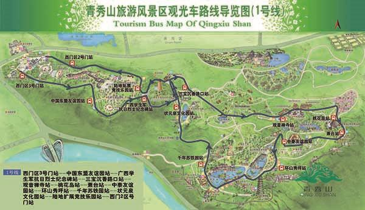
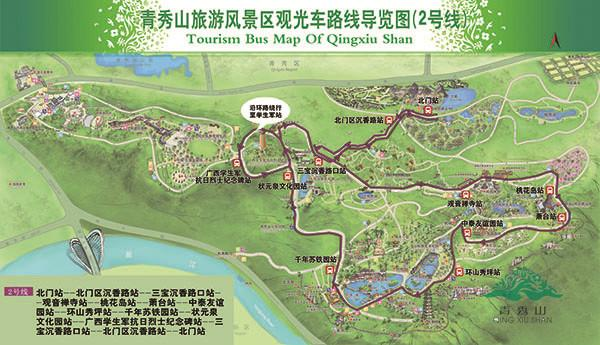
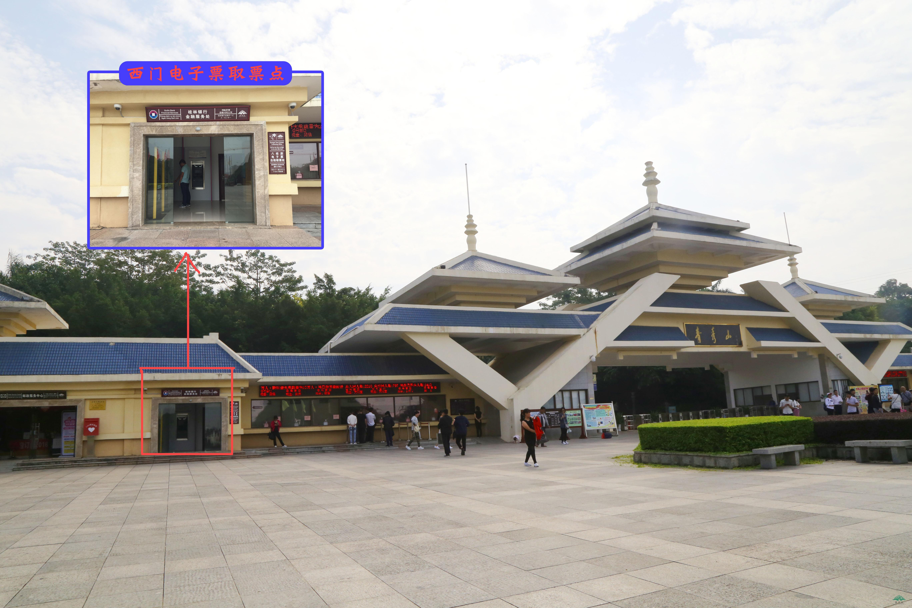
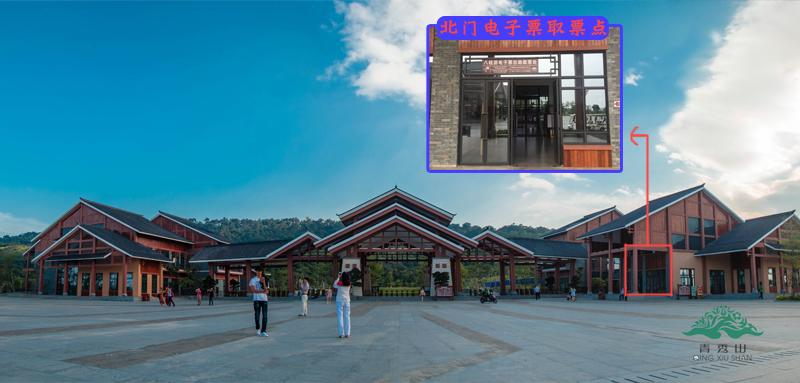

---------------------------------游玩攻略----------------------------------
1、票价：
观光车：5元/单次票 ，小火车票价：10元/单次票，50元/通票（任何车型都可乘坐）
2、观光车路线：
西门1号线：西门2号门站（始发站）→学生军站→三宝沉香路口站→观音禅寺站→桃花岛站→萧台站→环山秀坪站→千年苏铁园站→状元泉站→陆地拓展站→西门2号门站（终点）
北门2号线：北门（沉香路站）→三宝沉香路口站→观音禅寺站→桃花岛站→萧台站→环山秀坪站→千年苏铁园站→状元泉站→学生军站→三宝沉香路口站→北门（终点）


青秀山门票服务
1、取票方式：景区西门或者北门的自助取票机自助换取门票入园
2、取票凭证：订单提交成功后，会免费获取订单短信，作为取票凭证
3、票务优惠：
(1)免票人群：身高1.2米（含）以下或6周岁（含6周岁）以下儿童、70周岁（含70周岁）以上老年人、现役军人、残疾人可免票入园。
(2)优惠人群：身高1.2（不含）-1.4（含）米儿童、18周岁（含18周岁）以下的学生、60周岁（含60周岁）-69（含）周岁之间的老年人可至青秀山景区票处购买优惠门票。
4、温馨提示：
(1)门票当天有效，出园需入园，请再次购票。
(2)为保证取票、入园顺利，预订时请务必填写真实姓名、手机号码等信息。
观光车服务1、取票方式：景区西门或者北门的自助取票机自助换取门票入园
3、票务优惠：
(1)免票人群：身高1.2米（含）以下或6周岁（含6周岁）以下儿童、70周岁（含70周岁）以上老年人、现役军人、残疾人可免票入园。
(2)优惠人群：身高1.2（不含）-1.4（含）米儿童、18周岁（含18周岁）以下的学生、60周岁（含60周岁）-69（含）周岁之间的老年人可至青秀山景区票处购买优惠门票。
4、温馨提示：
(1)门票当天有效，出园需入园，请再次购票。
(2)为保证取票、入园顺利，预订时请务必填写真实姓名、手机号码等信息。
1、票价：
观光车：5元/单次票 ，小火车票价：10元/单次票，50元/通票（任何车型都可乘坐）
2、观光车路线：
西门1号线：西门2号门站（始发站）→学生军站→三宝沉香路口站→观音禅寺站→桃花岛站→萧台站→环山秀坪站→千年苏铁园站→状元泉站→陆地拓展站→西门2号门站（终点）
北门2号线：北门（沉香路站）→三宝沉香路口站→观音禅寺站→桃花岛站→萧台站→环山秀坪站→千年苏铁园站→状元泉站→学生军站→三宝沉香路口站→北门（终点）